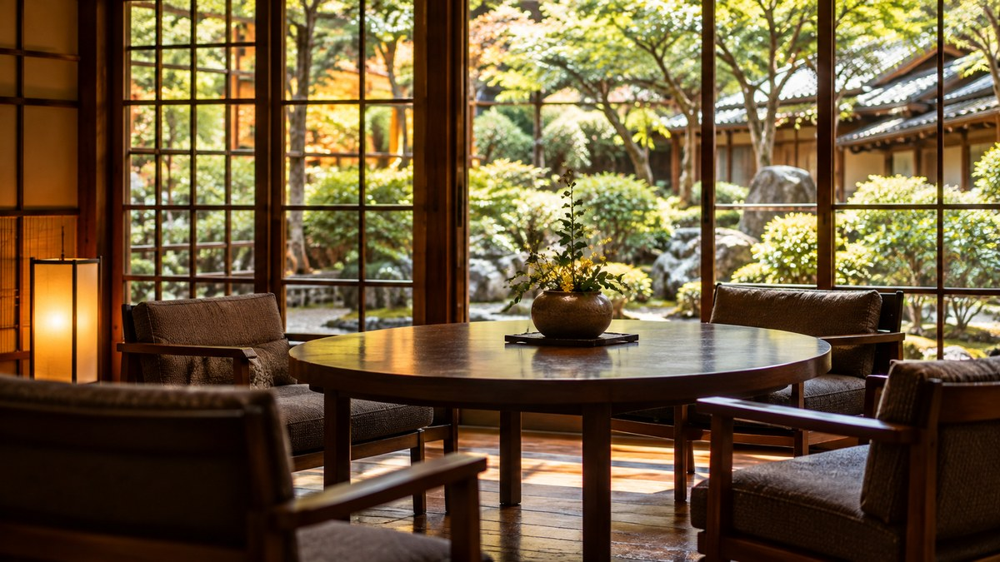

宿泊施設のDX・業務改善支援
仕事の流れを一緒に整理し、PMSの選定・移行から、現場で使い続けられる状態まで支援します。
宿泊・観光DX / 業務改善 / 集客
旅館・ホテルの仕事は、施設ごとに違います。だから、まずは予約やフロント、バックオフィスの動きを見せてください。PMSの選定・導入から手順の見直し、スタッフ研修まで、現場で無理なく続く形を一緒につくります。
事業内容
決まったやり方を当てはめず、目の前の困りごとから必要な支援を組み立てます。
仕事の流れを一緒に整理し、PMSの選定・移行から、現場で使い続けられる状態まで支援します。
操作を覚えるだけで終わらせず、日々のどの仕事で使うかを一緒に決め、現場で試します。

地域や施設の強みを掘り起こし、商品にするところから売り方を決めるところまで一緒に進めます。
誰に何を届けるかを整理し、写真・説明文、海外OTAへの掲載、Webでの発信を整えます。
UGATTAについて
資料や数字だけでは、仕事の詰まり方までは分かりません。予約、フロント、バックオフィスなど、日々の仕事と人の動きを実際に見せてもらいます。
予約情報を複数の台帳へ入力している。
PMSを切り替えたいが、選び方や移行手順が分からない。
海外向けの体験商品を、どこでどう販売するか決まらない。
話を聞きながら、手順を変えれば済むこと、システムや研修が必要なことを切り分けます。ツールを入れることを目的にせず、忙しい現場でも続けられるやり方を一緒に考え、動かします。
会社概要を見る会議室だけで答えを出さず、仕事の流れと人の動きを確かめます。
難しいことも曖昧にせず、専門用語で濁さずにお伝えします。
一度に全部を変えず、手をつけられるところから試して直します。
現場の仕事を聞き取り、残す作業と変える作業を整理してから、PMS選定、データ移行、新しい手順づくり、スタッフ研修まで一緒に進めました。
地域と施設の強みを一緒に洗い出して体験商品を企画し、写真・説明文の準備から海外OTAへの掲載まで進めました。
宿泊DXラボ
自社のDX課題を整理する診断ツールや、観光市場の変化を捉える統計データなどを、UGATTAが運営する別サイトで実験的に公開しています。
進め方
最初から大きく変えません。困っていることを整理し、手をつけられるところから始めます。
仕事の流れと困りごとを確認
先に取り組む課題と進め方を整理
ツール導入、研修、商品企画などを実施
現場の声を聞き、続けられる形に調整
よくあるご質問
まだ考えがまとまっていない段階でも、ご相談いただけます。
旅館・ホテルのDX・業務改善が中心です。現場の仕事を一緒に整理し、必要に応じてPMSの導入、スタッフ研修、体験商品づくり、海外OTAへの掲載まで支援します。
はい。まず現場を見て、今の手順を聞かせてください。システムが必要なのか、仕事の進め方を変えればよいのか、一緒に整理します。
誰に何を届けたいかを伺い、体験商品の企画、写真や説明文の整理、海外OTAへの掲載、Webでの発信など、必要なところを一緒に進めます。
お問い合わせ
予約管理、PMSの切り替え、スタッフ研修、海外向け商品の販売など、今どこで手が止まっているのかから一緒に整理します。